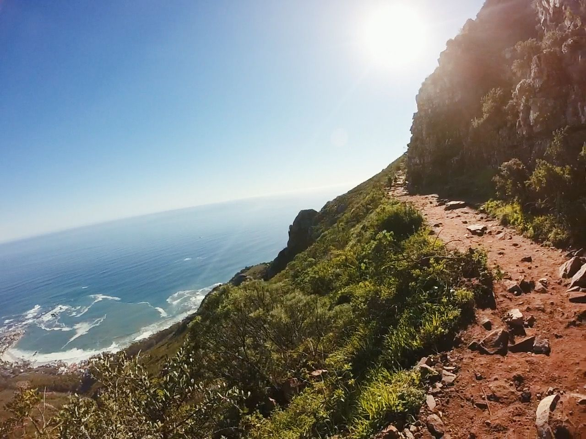

-
Gaming

I enjoy a wide variety of genres. Some of my favourites are Doom Eternal, Dishonoured 2, Ready Or Not and Battlefield 4.
-
Podcasts
Being on the road alot, I've enjoyed countless hours of conversations and teachings on some really interesting topics.
-
Hiking
Spending time in nature is important. I enjoy walking up Lion's Head, Constantia Neck, Elephants Eye. These are some great trials if you are ever traveling to Cape Town.